Due to the communication with Mars already possess the technology of the speed of light, a message from Mars to Earth has only about 22 minutes to happen, however, for NASA this speed is still not enough because they make difficult the operations in guiding robots and research cars on the planet.
Besides, we have to think beyond Mars, what will be the next steps in 30.40 years? Do we have enough technology to make communications with other planets or solar systems?
For this communication to occur in an efficient way, faster mechanisms are needed, which means extrapolating the theory of general relativity proposed by Albert Einstein.


Gamma Ray Explosions, generated through cosmic explosions, may have the capacity to be even faster than the speed of light, however ... it takes something like two big stars collapsing into a black hole or the shock of something like neutron stars for that to happen so...
Quantum entanglement is a phenomenon that happens when a pair or group of particles is generated, interact, or share some kind of link between them, and what affects one have also effect in other, no matter how far they could be from each other.
A funny feature is that when entanglement between some particles happens, it was detected that they could even share the physical state, making one disappear when another appears what is usually called Quantum teleportation.
Although scientists are skeptical about any transmission of the information at faster-than-light speed using this quantum entanglement, lest's explore the idea...
Minnoctlevs Team, Brazil - 2020

created with
Website Builder Software .